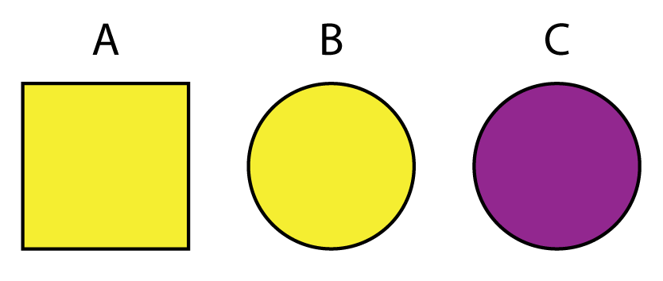

library(archdata)
library(palmerpenguins)
library(dplyr)Lab 06: Working with Tables
A review and a deep dive into working with rectangular data in R.
Outline
Objectives
This lab will guide you through the process of
- constructing data.frames and tibbles
- working with the pipe
- working with columns (variables) in a table
- working with rows (observations) in a table
- working with grouped data in a table
R Packages
Data
-
penguins- Includes measurements for penguin species, island in Palmer Archipelago, size (flipper length, body mass, bill dimensions), and sex.
- package:
palmerpenguins - reference: https://allisonhorst.github.io/palmerpenguins/reference/penguins.html
-
DartPoints- Includes measurements of 91 Archaic dart points recovered during surface surveys at Fort Hood, Texas.
- package:
archdata - reference: https://cran.r-project.org/web/packages/archdata/archdata.pdf
Tables

Consider this research scenario: you have a museum collection of projectile points that you want to use for an analysis, maybe you want to know whether East Gate and Rose Spring points are actually the same type of point, commonly referred to using the portmanteau Rosegate. Following tradition, you think maybe it’s the size and shape that will you help finally put this old question to rest, so for each individual point, you set about measuring its length, width, and height.
In this course, we’ll refer to each individual measure that you make as a value, each set of such measures for an individual point we will call (somewhat awkwardly) an observation, and each individual type of measurement will be a variable. It is almost certainly the case that you will be collecting this data and storing it in something like a spreadsheet or table, like that shown in Figure 1. You will sometimes hear data scientists refer to data stored in this way as rectangular data. All they mean by that is that the data come as collections of values organized into rows and columns. Crucially, all the columns must have the same length, so you can describe the data as having dimensions, specifically length (the number of observations or rows) and width (the number of variables or columns).
Creating tables
In R, tabular datasets are known as data frames. To create a data frame, we use the eponymous data.frame() function. Here, for example, is how we would create the table in Figure 1 above:
projectiles_df <- data.frame(
type = c("Elko", "Rosegate", "DSN", "Elko", "Clovis"),
length = c(2.03, 1.4, 1.9, 2.1, 3.3),
width = c(0.8, 0.4, 0.3, 0.7, 0.95),
height = c(3.23, 2.4, 1.29, 2.7, 4.15)
)
projectiles_df type length width height
1 Elko 2.03 0.80 3.23
2 Rosegate 1.40 0.40 2.40
3 DSN 1.90 0.30 1.29
4 Elko 2.10 0.70 2.70
5 Clovis 3.30 0.95 4.15Note that the values (or measurements) contained in each variable are wrapped in the c() function (short for concatenate). This variable tells R that all these values belong to this one variable. Each variable in turn is an argument to data.frame() having the form <variable> = c(<value-1>, <value-2>, ..., <value-n>).
Getting basic meta-data from tables
When you want to know what variables a table includes, you can use the names() function.
names(projectiles_df)[1] "type" "length" "width" "height"If you want to know how many variables or observations the table has, you can use nrow() and ncol() respectively.
Pretty tibbles
As an alternative to the default data.frame, you can also use a tibble, which is a standard format used by packages within the tidyverse, including the tibble package that defines it. In the grand scheme of things, the differences between tibbles and data.frames are quite small, mostly relating to their nicer (some might say prettier) print methods. It has some other nice features, but most of them are not things that should concern a beginning R user, so we won’t dwell on them here.
You create a tibble just like you would a data.frame, but with the tibble() function.
Now you can see how the print method for tibbles differs from that of data.frames.
projectiles_df type length width height
1 Elko 2.03 0.80 3.23
2 Rosegate 1.40 0.40 2.40
3 DSN 1.90 0.30 1.29
4 Elko 2.10 0.70 2.70
5 Clovis 3.30 0.95 4.15projectiles_tbl# A tibble: 5 × 4
type length width height
<chr> <dbl> <dbl> <dbl>
1 Elko 2.03 0.8 3.23
2 Rosegate 1.4 0.4 2.4
3 DSN 1.9 0.3 1.29
4 Elko 2.1 0.7 2.7
5 Clovis 3.3 0.95 4.15There are a few big differences here:
- By default
tibble()will only print the first ten rows of data. This saves you from having to use thehead()function. It will also tell you how many rows were not printed at the bottom, assuming there are more than ten. Withdata.frame(), the default print will print the maximum number of rows defined in your default options. -
tibble()will only print columns that fit on your screen. It will then tell you how many columns were not printed. -
tibble()provides information about the dimensions of your table: the number of rows and columns. -
tibble()provides information about the type of data each variable is: factor (fct), character, numeric (dblfor “double” orintfor “integer”).
While the choice between tibbles and data.frames is largely a stylistic one, I would encourage you to use tibbles as much as possible. It’ll make things easier for you in the long run. You can always convert between them if you want with as_tibble() and as.data.frame().
# turn a tibble into a data.frame
projectiles_df <- as.data.frame(projectiles_tbl)
# turn a data.frame into a tibble
projectiles_tbl <- as_tibble(projectiles_df)In what follows, we are going to learn how to perform some tasks that almost always arise when working with tables using a powerful set of tools provided by the dplyr package, which is part of the tidyverse.
Exercises
- Get the names of the variables in the
penguinstable withnames(). - How many observations and variables are in this dataset? Hint: use
nrow()andncol(). - Load the DartPoints dataset and convert the data.frame to a tibble with
as_tibble(). Assign it to a new object called “darts” using the arrow<-. Then remove the original DartPoints dataframe from your environment withremove(DartPoints).
The Pipe
 The Treachery of Images (1929) by Rene Magritte.
The Treachery of Images (1929) by Rene Magritte.
Before we get to the ways in which you can shape and otherwise manipulate tables in R, though, let’s introduce a style of coding referred to as piping first, which allows you to express a series of operations in a clear and concise way. To motivate the use of pipes, consider this extremely common scenario: you want to select some specific variables in your table, filter the observations to include a subset based on some condition, then add a new variable by transforming or mutating another one. Your code might look like this (we will explain how to use these functions in just a moment):
You will sometimes see people write the same series of function calls this way:
This is called nesting. It’s primary advantage is that it does not require saving intermediate objects (like bob and tom) and thus polluting your R environment with unnecessary copies of your data. Nesting function calls in this way is fine as long as it remains relatively shallow, but the deeper the nest (like 2 or 3 functions deep), the harder it is to read, as you must follow results from the inside out and bottom up, as opposed to left to right and top down, which is more natural.
To avoid deep nests and temporary assignments, you can use pipes. This involves calling the special operator, |>, consisting of a vertical bar and the greater-than sign that was introduced to base R in 2021 with version 4.1.0. If you squint (and depending on the font you are using), it looks a bit like an arrow pointing to the right. Using the pipe-operator looks like this:
If you were to transpose this code into a natural language like English, it would sound something like this,
Take the penguins table, then select the variables species, sex, and body mass, then filter the males, then create a new variable by converting bill length from millimeters to centimeters.
The ‘then’ in each case is the pipe operator. Crucially, the pipe assumes that the data being transformed is the first argument to the function, which is true for all the functions in the tidyverse, as they were all designed very intentionally to work with the pipe. Unfortunately, many parts of R were written long before the pipe was ever introduced, so they may not work as easily with it.
Columns
Now that we have the pipe, let’s look at different ways of working with variables or columns in a table. Some of the most common tasks involve selecting a subset of variables, relocating them, renaming them, and creating new variables. As mentioned before, the focus here will be on dplyr functions, but we will also take some time to introduce base R methods where appropriate.
pull()
To pull a variable out of a table and return it as a vector, you can pass the table along with the name of the target variable to the pull() function from dplyr.
penguins |> pull(bill_length_mm) [1] 39.1 39.5 40.3 NA 36.7 39.3 38.9 39.2 34.1 42.0 37.8 37.8 41.1 38.6 34.6
[16] 36.6 38.7 42.5 34.4 46.0 37.8 37.7 35.9 38.2 38.8 35.3 40.6 40.5 37.9 40.5
[31] 39.5 37.2 39.5 40.9 36.4 39.2 38.8 42.2 37.6 39.8 36.5 40.8 36.0 44.1 37.0
[46] 39.6 41.1 37.5 36.0 42.3 39.6 40.1 35.0 42.0 34.5 41.4 39.0 40.6 36.5 37.6
[61] 35.7 41.3 37.6 41.1 36.4 41.6 35.5 41.1 35.9 41.8 33.5 39.7 39.6 45.8 35.5
[76] 42.8 40.9 37.2 36.2 42.1 34.6 42.9 36.7 35.1 37.3 41.3 36.3 36.9 38.3 38.9
[91] 35.7 41.1 34.0 39.6 36.2 40.8 38.1 40.3 33.1 43.2 35.0 41.0 37.7 37.8 37.9
[106] 39.7 38.6 38.2 38.1 43.2 38.1 45.6 39.7 42.2 39.6 42.7 38.6 37.3 35.7 41.1
[121] 36.2 37.7 40.2 41.4 35.2 40.6 38.8 41.5 39.0 44.1 38.5 43.1 36.8 37.5 38.1
[136] 41.1 35.6 40.2 37.0 39.7 40.2 40.6 32.1 40.7 37.3 39.0 39.2 36.6 36.0 37.8
[151] 36.0 41.5 46.1 50.0 48.7 50.0 47.6 46.5 45.4 46.7 43.3 46.8 40.9 49.0 45.5
[166] 48.4 45.8 49.3 42.0 49.2 46.2 48.7 50.2 45.1 46.5 46.3 42.9 46.1 44.5 47.8
[181] 48.2 50.0 47.3 42.8 45.1 59.6 49.1 48.4 42.6 44.4 44.0 48.7 42.7 49.6 45.3
[196] 49.6 50.5 43.6 45.5 50.5 44.9 45.2 46.6 48.5 45.1 50.1 46.5 45.0 43.8 45.5
[211] 43.2 50.4 45.3 46.2 45.7 54.3 45.8 49.8 46.2 49.5 43.5 50.7 47.7 46.4 48.2
[226] 46.5 46.4 48.6 47.5 51.1 45.2 45.2 49.1 52.5 47.4 50.0 44.9 50.8 43.4 51.3
[241] 47.5 52.1 47.5 52.2 45.5 49.5 44.5 50.8 49.4 46.9 48.4 51.1 48.5 55.9 47.2
[256] 49.1 47.3 46.8 41.7 53.4 43.3 48.1 50.5 49.8 43.5 51.5 46.2 55.1 44.5 48.8
[271] 47.2 NA 46.8 50.4 45.2 49.9 46.5 50.0 51.3 45.4 52.7 45.2 46.1 51.3 46.0
[286] 51.3 46.6 51.7 47.0 52.0 45.9 50.5 50.3 58.0 46.4 49.2 42.4 48.5 43.2 50.6
[301] 46.7 52.0 50.5 49.5 46.4 52.8 40.9 54.2 42.5 51.0 49.7 47.5 47.6 52.0 46.9
[316] 53.5 49.0 46.2 50.9 45.5 50.9 50.8 50.1 49.0 51.5 49.8 48.1 51.4 45.7 50.7
[331] 42.5 52.2 45.2 49.3 50.2 45.6 51.9 46.8 45.7 55.8 43.5 49.6 50.8 50.2penguins |> pull(bill_depth_mm) [1] 18.7 17.4 18.0 NA 19.3 20.6 17.8 19.6 18.1 20.2 17.1 17.3 17.6 21.2 21.1
[16] 17.8 19.0 20.7 18.4 21.5 18.3 18.7 19.2 18.1 17.2 18.9 18.6 17.9 18.6 18.9
[31] 16.7 18.1 17.8 18.9 17.0 21.1 20.0 18.5 19.3 19.1 18.0 18.4 18.5 19.7 16.9
[46] 18.8 19.0 18.9 17.9 21.2 17.7 18.9 17.9 19.5 18.1 18.6 17.5 18.8 16.6 19.1
[61] 16.9 21.1 17.0 18.2 17.1 18.0 16.2 19.1 16.6 19.4 19.0 18.4 17.2 18.9 17.5
[76] 18.5 16.8 19.4 16.1 19.1 17.2 17.6 18.8 19.4 17.8 20.3 19.5 18.6 19.2 18.8
[91] 18.0 18.1 17.1 18.1 17.3 18.9 18.6 18.5 16.1 18.5 17.9 20.0 16.0 20.0 18.6
[106] 18.9 17.2 20.0 17.0 19.0 16.5 20.3 17.7 19.5 20.7 18.3 17.0 20.5 17.0 18.6
[121] 17.2 19.8 17.0 18.5 15.9 19.0 17.6 18.3 17.1 18.0 17.9 19.2 18.5 18.5 17.6
[136] 17.5 17.5 20.1 16.5 17.9 17.1 17.2 15.5 17.0 16.8 18.7 18.6 18.4 17.8 18.1
[151] 17.1 18.5 13.2 16.3 14.1 15.2 14.5 13.5 14.6 15.3 13.4 15.4 13.7 16.1 13.7
[166] 14.6 14.6 15.7 13.5 15.2 14.5 15.1 14.3 14.5 14.5 15.8 13.1 15.1 14.3 15.0
[181] 14.3 15.3 15.3 14.2 14.5 17.0 14.8 16.3 13.7 17.3 13.6 15.7 13.7 16.0 13.7
[196] 15.0 15.9 13.9 13.9 15.9 13.3 15.8 14.2 14.1 14.4 15.0 14.4 15.4 13.9 15.0
[211] 14.5 15.3 13.8 14.9 13.9 15.7 14.2 16.8 14.4 16.2 14.2 15.0 15.0 15.6 15.6
[226] 14.8 15.0 16.0 14.2 16.3 13.8 16.4 14.5 15.6 14.6 15.9 13.8 17.3 14.4 14.2
[241] 14.0 17.0 15.0 17.1 14.5 16.1 14.7 15.7 15.8 14.6 14.4 16.5 15.0 17.0 15.5
[256] 15.0 13.8 16.1 14.7 15.8 14.0 15.1 15.2 15.9 15.2 16.3 14.1 16.0 15.7 16.2
[271] 13.7 NA 14.3 15.7 14.8 16.1 17.9 19.5 19.2 18.7 19.8 17.8 18.2 18.2 18.9
[286] 19.9 17.8 20.3 17.3 18.1 17.1 19.6 20.0 17.8 18.6 18.2 17.3 17.5 16.6 19.4
[301] 17.9 19.0 18.4 19.0 17.8 20.0 16.6 20.8 16.7 18.8 18.6 16.8 18.3 20.7 16.6
[316] 19.9 19.5 17.5 19.1 17.0 17.9 18.5 17.9 19.6 18.7 17.3 16.4 19.0 17.3 19.7
[331] 17.3 18.8 16.6 19.9 18.8 19.4 19.5 16.5 17.0 19.8 18.1 18.2 19.0 18.7The base R way of doing this relies on double brackets or the dollar sign, as in <table>[["<variable>"]] and <table>$<variable>.
penguins$bill_length_mm [1] 39.1 39.5 40.3 NA 36.7 39.3 38.9 39.2 34.1 42.0 37.8 37.8 41.1 38.6 34.6
[16] 36.6 38.7 42.5 34.4 46.0 37.8 37.7 35.9 38.2 38.8 35.3 40.6 40.5 37.9 40.5
[31] 39.5 37.2 39.5 40.9 36.4 39.2 38.8 42.2 37.6 39.8 36.5 40.8 36.0 44.1 37.0
[46] 39.6 41.1 37.5 36.0 42.3 39.6 40.1 35.0 42.0 34.5 41.4 39.0 40.6 36.5 37.6
[61] 35.7 41.3 37.6 41.1 36.4 41.6 35.5 41.1 35.9 41.8 33.5 39.7 39.6 45.8 35.5
[76] 42.8 40.9 37.2 36.2 42.1 34.6 42.9 36.7 35.1 37.3 41.3 36.3 36.9 38.3 38.9
[91] 35.7 41.1 34.0 39.6 36.2 40.8 38.1 40.3 33.1 43.2 35.0 41.0 37.7 37.8 37.9
[106] 39.7 38.6 38.2 38.1 43.2 38.1 45.6 39.7 42.2 39.6 42.7 38.6 37.3 35.7 41.1
[121] 36.2 37.7 40.2 41.4 35.2 40.6 38.8 41.5 39.0 44.1 38.5 43.1 36.8 37.5 38.1
[136] 41.1 35.6 40.2 37.0 39.7 40.2 40.6 32.1 40.7 37.3 39.0 39.2 36.6 36.0 37.8
[151] 36.0 41.5 46.1 50.0 48.7 50.0 47.6 46.5 45.4 46.7 43.3 46.8 40.9 49.0 45.5
[166] 48.4 45.8 49.3 42.0 49.2 46.2 48.7 50.2 45.1 46.5 46.3 42.9 46.1 44.5 47.8
[181] 48.2 50.0 47.3 42.8 45.1 59.6 49.1 48.4 42.6 44.4 44.0 48.7 42.7 49.6 45.3
[196] 49.6 50.5 43.6 45.5 50.5 44.9 45.2 46.6 48.5 45.1 50.1 46.5 45.0 43.8 45.5
[211] 43.2 50.4 45.3 46.2 45.7 54.3 45.8 49.8 46.2 49.5 43.5 50.7 47.7 46.4 48.2
[226] 46.5 46.4 48.6 47.5 51.1 45.2 45.2 49.1 52.5 47.4 50.0 44.9 50.8 43.4 51.3
[241] 47.5 52.1 47.5 52.2 45.5 49.5 44.5 50.8 49.4 46.9 48.4 51.1 48.5 55.9 47.2
[256] 49.1 47.3 46.8 41.7 53.4 43.3 48.1 50.5 49.8 43.5 51.5 46.2 55.1 44.5 48.8
[271] 47.2 NA 46.8 50.4 45.2 49.9 46.5 50.0 51.3 45.4 52.7 45.2 46.1 51.3 46.0
[286] 51.3 46.6 51.7 47.0 52.0 45.9 50.5 50.3 58.0 46.4 49.2 42.4 48.5 43.2 50.6
[301] 46.7 52.0 50.5 49.5 46.4 52.8 40.9 54.2 42.5 51.0 49.7 47.5 47.6 52.0 46.9
[316] 53.5 49.0 46.2 50.9 45.5 50.9 50.8 50.1 49.0 51.5 49.8 48.1 51.4 45.7 50.7
[331] 42.5 52.2 45.2 49.3 50.2 45.6 51.9 46.8 45.7 55.8 43.5 49.6 50.8 50.2penguins[["bill_depth_mm"]] [1] 18.7 17.4 18.0 NA 19.3 20.6 17.8 19.6 18.1 20.2 17.1 17.3 17.6 21.2 21.1
[16] 17.8 19.0 20.7 18.4 21.5 18.3 18.7 19.2 18.1 17.2 18.9 18.6 17.9 18.6 18.9
[31] 16.7 18.1 17.8 18.9 17.0 21.1 20.0 18.5 19.3 19.1 18.0 18.4 18.5 19.7 16.9
[46] 18.8 19.0 18.9 17.9 21.2 17.7 18.9 17.9 19.5 18.1 18.6 17.5 18.8 16.6 19.1
[61] 16.9 21.1 17.0 18.2 17.1 18.0 16.2 19.1 16.6 19.4 19.0 18.4 17.2 18.9 17.5
[76] 18.5 16.8 19.4 16.1 19.1 17.2 17.6 18.8 19.4 17.8 20.3 19.5 18.6 19.2 18.8
[91] 18.0 18.1 17.1 18.1 17.3 18.9 18.6 18.5 16.1 18.5 17.9 20.0 16.0 20.0 18.6
[106] 18.9 17.2 20.0 17.0 19.0 16.5 20.3 17.7 19.5 20.7 18.3 17.0 20.5 17.0 18.6
[121] 17.2 19.8 17.0 18.5 15.9 19.0 17.6 18.3 17.1 18.0 17.9 19.2 18.5 18.5 17.6
[136] 17.5 17.5 20.1 16.5 17.9 17.1 17.2 15.5 17.0 16.8 18.7 18.6 18.4 17.8 18.1
[151] 17.1 18.5 13.2 16.3 14.1 15.2 14.5 13.5 14.6 15.3 13.4 15.4 13.7 16.1 13.7
[166] 14.6 14.6 15.7 13.5 15.2 14.5 15.1 14.3 14.5 14.5 15.8 13.1 15.1 14.3 15.0
[181] 14.3 15.3 15.3 14.2 14.5 17.0 14.8 16.3 13.7 17.3 13.6 15.7 13.7 16.0 13.7
[196] 15.0 15.9 13.9 13.9 15.9 13.3 15.8 14.2 14.1 14.4 15.0 14.4 15.4 13.9 15.0
[211] 14.5 15.3 13.8 14.9 13.9 15.7 14.2 16.8 14.4 16.2 14.2 15.0 15.0 15.6 15.6
[226] 14.8 15.0 16.0 14.2 16.3 13.8 16.4 14.5 15.6 14.6 15.9 13.8 17.3 14.4 14.2
[241] 14.0 17.0 15.0 17.1 14.5 16.1 14.7 15.7 15.8 14.6 14.4 16.5 15.0 17.0 15.5
[256] 15.0 13.8 16.1 14.7 15.8 14.0 15.1 15.2 15.9 15.2 16.3 14.1 16.0 15.7 16.2
[271] 13.7 NA 14.3 15.7 14.8 16.1 17.9 19.5 19.2 18.7 19.8 17.8 18.2 18.2 18.9
[286] 19.9 17.8 20.3 17.3 18.1 17.1 19.6 20.0 17.8 18.6 18.2 17.3 17.5 16.6 19.4
[301] 17.9 19.0 18.4 19.0 17.8 20.0 16.6 20.8 16.7 18.8 18.6 16.8 18.3 20.7 16.6
[316] 19.9 19.5 17.5 19.1 17.0 17.9 18.5 17.9 19.6 18.7 17.3 16.4 19.0 17.3 19.7
[331] 17.3 18.8 16.6 19.9 18.8 19.4 19.5 16.5 17.0 19.8 18.1 18.2 19.0 18.7As you can see, using the dplyr function is quite a bit easier to read and intuit what you are doing. It also plays nice with the pipe.
select()
If you want to select one or more variables but return the result as a table, pass the table along with the names of the desired variables to select(). As an example, suppose (for reasons) that we want a smaller table that only has the species and bill_length_mm variables. To get that from the larger table, I simply do this
penguins |> select(species, bill_length_mm)# A tibble: 344 × 2
species bill_length_mm
<fct> <dbl>
1 Adelie 39.1
2 Adelie 39.5
3 Adelie 40.3
4 Adelie NA
5 Adelie 36.7
6 Adelie 39.3
7 Adelie 38.9
8 Adelie 39.2
9 Adelie 34.1
10 Adelie 42
# … with 334 more rowsrename()
To rename variables in a table, use the rename() function. This is similar to pull() and select() in that you pass it column names, but you are also going to signal new names for those columns using the equal sign. The idea here is to do rename(<new name> = <old name>). Here, for example, is how you might remove the units of measure from the variable names in the penguins table.
penguins |> names()[1] "species" "island" "bill_length_mm"
[4] "bill_depth_mm" "flipper_length_mm" "body_mass_g"
[7] "sex" "year" penguins |>
rename(
bill_length = bill_length_mm,
bill_depth = bill_depth_mm,
flipper_length = flipper_length_mm,
body_mass = body_mass_g
) |>
names()[1] "species" "island" "bill_length" "bill_depth"
[5] "flipper_length" "body_mass" "sex" "year" Here is one trick you might find useful. Sometimes you will find yourself wanting to rename all the variables in a consistent way, for instance, by making them all lower case. This is something I find myself doing quite often actually. Base R has this nice function called tolower() that converts capitalized letters to lowercase. For instance, tolower("ABC") returns abc. There’s a corresponding toupper() that does the opposite. You can apply these functions to every column in one go with rename_with().
penguins |>
rename_with(toupper) |>
names()[1] "SPECIES" "ISLAND" "BILL_LENGTH_MM"
[4] "BILL_DEPTH_MM" "FLIPPER_LENGTH_MM" "BODY_MASS_G"
[7] "SEX" "YEAR" relocate()
You will sometimes find it helpful to reorder your variables. To do that, you can use relocate(), again passing it the column names. By default, it moves variables to the front, but you can also move them before or after specific variables with the .before and .after arguments.
penguins |> names()[1] "species" "island" "bill_length_mm"
[4] "bill_depth_mm" "flipper_length_mm" "body_mass_g"
[7] "sex" "year" [1] "sex" "year" "species"
[4] "island" "bill_length_mm" "bill_depth_mm"
[7] "flipper_length_mm" "body_mass_g" [1] "species" "island" "sex"
[4] "year" "bill_length_mm" "bill_depth_mm"
[7] "flipper_length_mm" "body_mass_g" mutate()
One of the most important and powerful functions provided by dplyr is mutate(). This allows you to add or change variables, often based on the values of other variables in your table. For instance, you can create a new variable that codes bill length in centimeters rather than millimeters. You just divide millimeters by 10.
penguins |>
mutate(bill_length_cm = bill_length_mm/10) |>
select(species, bill_length_mm, bill_length_cm)# A tibble: 344 × 3
species bill_length_mm bill_length_cm
<fct> <dbl> <dbl>
1 Adelie 39.1 3.91
2 Adelie 39.5 3.95
3 Adelie 40.3 4.03
4 Adelie NA NA
5 Adelie 36.7 3.67
6 Adelie 39.3 3.93
7 Adelie 38.9 3.89
8 Adelie 39.2 3.92
9 Adelie 34.1 3.41
10 Adelie 42 4.2
# … with 334 more rowsYou can refer to as many variables in the table as you like, too. For instance, you can calculate the ratio of bill length to flipper length.
penguins |>
mutate(bill_to_flipper = bill_length_mm/flipper_length_mm) |>
select(species, bill_length_mm, flipper_length_mm, bill_to_flipper)# A tibble: 344 × 4
species bill_length_mm flipper_length_mm bill_to_flipper
<fct> <dbl> <int> <dbl>
1 Adelie 39.1 181 0.216
2 Adelie 39.5 186 0.212
3 Adelie 40.3 195 0.207
4 Adelie NA NA NA
5 Adelie 36.7 193 0.190
6 Adelie 39.3 190 0.207
7 Adelie 38.9 181 0.215
8 Adelie 39.2 195 0.201
9 Adelie 34.1 193 0.177
10 Adelie 42 190 0.221
# … with 334 more rowsWhen you work with mutate(), keep in mind that data.frames and tibbles are rectangular. That means each variable in the table must have the same number of values (equal to the number of rows or observations in the table). In the penguins table, there are 344 observations, so any new variable that you add with mutate() must have 344 values (it must have that length). If the variable you want to add does not have the same length, you will receive an error like the following:
penguins |> mutate(id = 1:5)Error in `mutate()`:
! Problem while computing `id = 1:5`.
✖ `id` must be size 344 or 1, not 5.Note, too, that you can refer to new variables you have created in the same mutate() call.
# A tibble: 344 × 4
species island id id2
<fct> <fct> <int> <dbl>
1 Adelie Torgersen 1 2
2 Adelie Torgersen 2 4
3 Adelie Torgersen 3 6
4 Adelie Torgersen 4 8
5 Adelie Torgersen 5 10
6 Adelie Torgersen 6 12
7 Adelie Torgersen 7 14
8 Adelie Torgersen 8 16
9 Adelie Torgersen 9 18
10 Adelie Torgersen 10 20
# … with 334 more rowsExercises
- Remind yourself of what variables the penguins table has with
names(). - Now, extract a variable of your choice with
pull(). - Subset the data by choosing only four variables of your choice with
select(). - Use
relocate()to move the species and island variables after bill_length_mm. - Use
mutate()on thepenguinsdata to create variables that- represent body mass in kilograms,
- represent bill depth in centimeters,
- compare bill length to bill depth to see whether the former is greater than (
>) the latter.
- Using the
dartstibble (formerly the DartPoints data.frame), rename the variables so that they are all lower case, rename the “name” variable to “type”, and subset to the type, length, width, and thickness variables. Reassign this to darts, so you can save the result. Hint:
darts <- darts |>
rename_with() |>
rename() |>
selet()- Use
mutate()to add a variable todartsthat is the ratio of point length to width.
Rows
arrange()
Sometimes it can be useful to sort a table, so you can more easily navigate the information it contains. To do this, dplyr provides the arrange() function. This sorts observations based on a supplied variable or variables. By default, it sorts observations in ascending order. If you provide multiple variables, it will sort the first variable first, then sort the second variable within that variable, and so on. In effect, it breaks ties in the sorting process.
penguins |> arrange(species, island)# A tibble: 344 × 8
species island bill_length_mm bill_depth_mm flipper_len…¹ body_…² sex year
<fct> <fct> <dbl> <dbl> <int> <int> <fct> <int>
1 Adelie Biscoe 37.8 18.3 174 3400 fema… 2007
2 Adelie Biscoe 37.7 18.7 180 3600 male 2007
3 Adelie Biscoe 35.9 19.2 189 3800 fema… 2007
4 Adelie Biscoe 38.2 18.1 185 3950 male 2007
5 Adelie Biscoe 38.8 17.2 180 3800 male 2007
6 Adelie Biscoe 35.3 18.9 187 3800 fema… 2007
7 Adelie Biscoe 40.6 18.6 183 3550 male 2007
8 Adelie Biscoe 40.5 17.9 187 3200 fema… 2007
9 Adelie Biscoe 37.9 18.6 172 3150 fema… 2007
10 Adelie Biscoe 40.5 18.9 180 3950 male 2007
# … with 334 more rows, and abbreviated variable names ¹flipper_length_mm,
# ²body_mass_gYou can use the desc() function to sort descending.
# A tibble: 344 × 8
species island bill_length_mm bill_depth_mm flipper_len…¹ body_…² sex year
<fct> <fct> <dbl> <dbl> <int> <int> <fct> <int>
1 Gentoo Biscoe 46.1 13.2 211 4500 fema… 2007
2 Gentoo Biscoe 50 16.3 230 5700 male 2007
3 Gentoo Biscoe 48.7 14.1 210 4450 fema… 2007
4 Gentoo Biscoe 50 15.2 218 5700 male 2007
5 Gentoo Biscoe 47.6 14.5 215 5400 male 2007
6 Gentoo Biscoe 46.5 13.5 210 4550 fema… 2007
7 Gentoo Biscoe 45.4 14.6 211 4800 fema… 2007
8 Gentoo Biscoe 46.7 15.3 219 5200 male 2007
9 Gentoo Biscoe 43.3 13.4 209 4400 fema… 2007
10 Gentoo Biscoe 46.8 15.4 215 5150 male 2007
# … with 334 more rows, and abbreviated variable names ¹flipper_length_mm,
# ²body_mass_gdistinct()
Observations will sometimes be duplicated in your data. The simplest way to remove them is with the distinct() function. For demonstration purposes, suppose you have this simple dataset.
tbl <- tibble(
x = c(1, 1, 1, 3, 2),
y = c("a", "a", "a", "b", "c"),
z = c(TRUE, TRUE, FALSE, TRUE, TRUE)
)
tbl# A tibble: 5 × 3
x y z
<dbl> <chr> <lgl>
1 1 a TRUE
2 1 a TRUE
3 1 a FALSE
4 3 b TRUE
5 2 c TRUE For whatever reason, your first observation or row has been duplicated (there are two rows with the values x=1, y=a, and z=TRUE). To remove that row, do this:
tbl |> distinct()# A tibble: 4 × 3
x y z
<dbl> <chr> <lgl>
1 1 a TRUE
2 1 a FALSE
3 3 b TRUE
4 2 c TRUE You may also want distinct combinations of a specific variable or variables.
tbl |> distinct(x, y)# A tibble: 3 × 2
x y
<dbl> <chr>
1 1 a
2 3 b
3 2 c filter()
Subsetting data by filtering observations is a little bit more involved than simply selecting variables, but intuitively, you are simply asking for those observations that satisfy a certain condition. Getting filter() to return those observations requires that you pass it an expression containing a comparison operator. The expression is then evaluated by R for its truth or falsity, with observations that evaluate to TRUE being returned, observations that evaluate to FALSE being ignored. Let’s walk through an example, then try to break down what is happening in a little more detail. Suppose we want only those observations of penguins residing on Biscoe Island. Here is how we would go about collecting those observations from our penguins data.frame.
penguins |> filter(island == "Biscoe")# A tibble: 168 × 8
species island bill_length_mm bill_depth_mm flipper_len…¹ body_…² sex year
<fct> <fct> <dbl> <dbl> <int> <int> <fct> <int>
1 Adelie Biscoe 37.8 18.3 174 3400 fema… 2007
2 Adelie Biscoe 37.7 18.7 180 3600 male 2007
3 Adelie Biscoe 35.9 19.2 189 3800 fema… 2007
4 Adelie Biscoe 38.2 18.1 185 3950 male 2007
5 Adelie Biscoe 38.8 17.2 180 3800 male 2007
6 Adelie Biscoe 35.3 18.9 187 3800 fema… 2007
7 Adelie Biscoe 40.6 18.6 183 3550 male 2007
8 Adelie Biscoe 40.5 17.9 187 3200 fema… 2007
9 Adelie Biscoe 37.9 18.6 172 3150 fema… 2007
10 Adelie Biscoe 40.5 18.9 180 3950 male 2007
# … with 158 more rows, and abbreviated variable names ¹flipper_length_mm,
# ²body_mass_gHere we supplied this key information to filter():
island == "Biscoe"What does this expression mean exactly? In effect, it is directing filter() to scan through our data, specifically the island column, and select only those rows where the value is Biscoe. The so-called comparison operator here is the double equal sign, ==. This is importantly different than the single equal sign, =, which is used inside a function as part of a key=value or argument=value pair. R provides several helpful comparison operators:
-
==for equals in the sense of a perfect match,
-
!=for not equals,
-
>for greater than,
-
>=for greater than or equal to,
-
<for less than, and
-
<=for less than or equal to.
You can use the first two, == and !=, for comparisons with either character or numeric variables, but the rest apply only to the latter. Let’s run through a few more examples:
Filter penguins with body mass greater than 3500 grams.
penguins |> filter(body_mass_g > 3500)# A tibble: 264 × 8
species island bill_length_mm bill_depth_mm flipper_…¹ body_…² sex year
<fct> <fct> <dbl> <dbl> <int> <int> <fct> <int>
1 Adelie Torgersen 39.1 18.7 181 3750 male 2007
2 Adelie Torgersen 39.5 17.4 186 3800 fema… 2007
3 Adelie Torgersen 39.3 20.6 190 3650 male 2007
4 Adelie Torgersen 38.9 17.8 181 3625 fema… 2007
5 Adelie Torgersen 39.2 19.6 195 4675 male 2007
6 Adelie Torgersen 42 20.2 190 4250 <NA> 2007
7 Adelie Torgersen 37.8 17.3 180 3700 <NA> 2007
8 Adelie Torgersen 38.6 21.2 191 3800 male 2007
9 Adelie Torgersen 34.6 21.1 198 4400 male 2007
10 Adelie Torgersen 36.6 17.8 185 3700 fema… 2007
# … with 254 more rows, and abbreviated variable names ¹flipper_length_mm,
# ²body_mass_gFilter penguins with beaks longer than 39 millimeters.
penguins |> filter(bill_length_mm > 39)# A tibble: 260 × 8
species island bill_length_mm bill_depth_mm flipper_…¹ body_…² sex year
<fct> <fct> <dbl> <dbl> <int> <int> <fct> <int>
1 Adelie Torgersen 39.1 18.7 181 3750 male 2007
2 Adelie Torgersen 39.5 17.4 186 3800 fema… 2007
3 Adelie Torgersen 40.3 18 195 3250 fema… 2007
4 Adelie Torgersen 39.3 20.6 190 3650 male 2007
5 Adelie Torgersen 39.2 19.6 195 4675 male 2007
6 Adelie Torgersen 42 20.2 190 4250 <NA> 2007
7 Adelie Torgersen 41.1 17.6 182 3200 fema… 2007
8 Adelie Torgersen 42.5 20.7 197 4500 male 2007
9 Adelie Torgersen 46 21.5 194 4200 male 2007
10 Adelie Biscoe 40.6 18.6 183 3550 male 2007
# … with 250 more rows, and abbreviated variable names ¹flipper_length_mm,
# ²body_mass_gMultiple conditions
Often enough, we will want to combine a number of these simple conditions into one complex expression. In R, this is done with Boolean operators:
-
&for and,
-
|for or, and
-
!for not.
To demonstrate the underlying logic of these Boolean operators, consider these shapes and colors. You can think of each of A, B, and C as its own observation or row in a data.frame that includes two variables color and shape.

| Boolean | Filter | Result |
|---|---|---|
| x | `color == "yellow"` | A, B |
| y | `shape == "circle"` | B, C |
| x & y | `color == "yellow" & shape == "circle"` | B |
| x | y | `color == "yellow" | shape == "circle"` | A, B, C |
| x & !y | `color == "yellow" & shape != "circle"` | A |
| !x & y | `color != "yellow" & shape == "circle"` | C |
| !(x & y) | `!(color == "yellow" & shape == "circle")` | A, C |
| !(x | y) | `!(color == "yellow" | shape == "circle")` | NULL |
And here is an example with our penguins data, where we ask R to return those observations in which (a) penguins reside on Biscoe Island and (b) their bills are longer than 39 millimeters.
penguins |> filter(island == "Biscoe" & bill_length_mm > 39)# A tibble: 143 × 8
species island bill_length_mm bill_depth_mm flipper_len…¹ body_…² sex year
<fct> <fct> <dbl> <dbl> <int> <int> <fct> <int>
1 Adelie Biscoe 40.6 18.6 183 3550 male 2007
2 Adelie Biscoe 40.5 17.9 187 3200 fema… 2007
3 Adelie Biscoe 40.5 18.9 180 3950 male 2007
4 Adelie Biscoe 39.6 17.7 186 3500 fema… 2008
5 Adelie Biscoe 40.1 18.9 188 4300 male 2008
6 Adelie Biscoe 42 19.5 200 4050 male 2008
7 Adelie Biscoe 41.4 18.6 191 3700 male 2008
8 Adelie Biscoe 40.6 18.8 193 3800 male 2008
9 Adelie Biscoe 41.3 21.1 195 4400 male 2008
10 Adelie Biscoe 41.1 18.2 192 4050 male 2008
# … with 133 more rows, and abbreviated variable names ¹flipper_length_mm,
# ²body_mass_gNote that filter() let’s you separate conditions with a comma, which it interprets as conjunction, represented by the &.
penguins |>
filter(
island == "Biscoe",
species == "Adelie",
body_mass_g < 3500
)# A tibble: 13 × 8
species island bill_length_mm bill_depth_mm flipper_len…¹ body_…² sex year
<fct> <fct> <dbl> <dbl> <int> <int> <fct> <int>
1 Adelie Biscoe 37.8 18.3 174 3400 fema… 2007
2 Adelie Biscoe 40.5 17.9 187 3200 fema… 2007
3 Adelie Biscoe 37.9 18.6 172 3150 fema… 2007
4 Adelie Biscoe 35 17.9 190 3450 fema… 2008
5 Adelie Biscoe 34.5 18.1 187 2900 fema… 2008
6 Adelie Biscoe 36.5 16.6 181 2850 fema… 2008
7 Adelie Biscoe 35.7 16.9 185 3150 fema… 2008
8 Adelie Biscoe 36.4 17.1 184 2850 fema… 2008
9 Adelie Biscoe 35.5 16.2 195 3350 fema… 2008
10 Adelie Biscoe 37.7 16 183 3075 fema… 2009
11 Adelie Biscoe 37.9 18.6 193 2925 fema… 2009
12 Adelie Biscoe 38.1 17 181 3175 fema… 2009
13 Adelie Biscoe 39.7 17.7 193 3200 fema… 2009
# … with abbreviated variable names ¹flipper_length_mm, ²body_mass_gExercises
- Try all of the following with
filter():- Filter penguins that reside on Torgersen island.
- Filter penguins that have a flipper length greater than 185 mm.
- Filter penguins that reside on Torgersen island and have a body mass less than 3500 g.
- Try filtering the DartPoints dataset.
- Filter darts that
Groups
Your data will often include natural groupings (like species in the penguins table or dart types in the darts table), and you will want to summarize information about each of those groups. The way that you do this with dplyr involves the use of group_by() and summarize().
penguins |> group_by(species)# A tibble: 344 × 8
# Groups: species [3]
species island bill_length_mm bill_depth_mm flipper_…¹ body_…² sex year
<fct> <fct> <dbl> <dbl> <int> <int> <fct> <int>
1 Adelie Torgersen 39.1 18.7 181 3750 male 2007
2 Adelie Torgersen 39.5 17.4 186 3800 fema… 2007
3 Adelie Torgersen 40.3 18 195 3250 fema… 2007
4 Adelie Torgersen NA NA NA NA <NA> 2007
5 Adelie Torgersen 36.7 19.3 193 3450 fema… 2007
6 Adelie Torgersen 39.3 20.6 190 3650 male 2007
7 Adelie Torgersen 38.9 17.8 181 3625 fema… 2007
8 Adelie Torgersen 39.2 19.6 195 4675 male 2007
9 Adelie Torgersen 34.1 18.1 193 3475 <NA> 2007
10 Adelie Torgersen 42 20.2 190 4250 <NA> 2007
# … with 334 more rows, and abbreviated variable names ¹flipper_length_mm,
# ²body_mass_gNotice that the data are not changed, but the tibble now includes information about the groupings (Groups: species [3]). Now, if you apply summarize() to it, it will know that you want summaries for each group.
penguins |>
group_by(species) |>
summarize(
mean_bill_length = mean(bill_length_mm, na.rm = TRUE),
var_bill_length = var(bill_length_mm, na.rm = TRUE)
)# A tibble: 3 × 3
species mean_bill_length var_bill_length
<fct> <dbl> <dbl>
1 Adelie 38.8 7.09
2 Chinstrap 48.8 11.2
3 Gentoo 47.5 9.50Note that you can summarize by multiple groups.
penguins |>
group_by(species, island) |>
summarize(
mean_bill_length = mean(bill_length_mm, na.rm = TRUE),
var_bill_length = var(bill_length_mm, na.rm = TRUE)
)# A tibble: 5 × 4
# Groups: species [3]
species island mean_bill_length var_bill_length
<fct> <fct> <dbl> <dbl>
1 Adelie Biscoe 39.0 6.15
2 Adelie Dream 38.5 6.08
3 Adelie Torgersen 39.0 9.15
4 Chinstrap Dream 48.8 11.2
5 Gentoo Biscoe 47.5 9.50A handy little function you will often want to use in summaries is n(). This counts the number of observations in each group.
penguins |>
group_by(species, island) |>
summarize(
count = n(),
mean_bill_length = mean(bill_length_mm, na.rm = TRUE),
var_bill_length = var(bill_length_mm, na.rm = TRUE)
)# A tibble: 5 × 5
# Groups: species [3]
species island count mean_bill_length var_bill_length
<fct> <fct> <int> <dbl> <dbl>
1 Adelie Biscoe 44 39.0 6.15
2 Adelie Dream 56 38.5 6.08
3 Adelie Torgersen 52 39.0 9.15
4 Chinstrap Dream 68 48.8 11.2
5 Gentoo Biscoe 124 47.5 9.50Now, suppose you wanted to get the three penguins in each species with the longest bills. To do that, you can apply the slice_max() function to the grouped penguins table.
# A tibble: 9 × 8
# Groups: species [3]
species island bill_length_mm bill_depth_mm flipper…¹ body_…² sex year
<fct> <fct> <dbl> <dbl> <int> <int> <fct> <int>
1 Adelie Torgersen 46 21.5 194 4200 male 2007
2 Adelie Torgersen 45.8 18.9 197 4150 male 2008
3 Adelie Biscoe 45.6 20.3 191 4600 male 2009
4 Chinstrap Dream 58 17.8 181 3700 fema… 2007
5 Chinstrap Dream 55.8 19.8 207 4000 male 2009
6 Chinstrap Dream 54.2 20.8 201 4300 male 2008
7 Gentoo Biscoe 59.6 17 230 6050 male 2007
8 Gentoo Biscoe 55.9 17 228 5600 male 2009
9 Gentoo Biscoe 55.1 16 230 5850 male 2009
# … with abbreviated variable names ¹flipper_length_mm, ²body_mass_gYou can also get a random sample from each group (known as a stratified random sample) with slice_sample().
penguins |>
group_by(species) |>
slice_sample(n = 3)# A tibble: 9 × 8
# Groups: species [3]
species island bill_length_mm bill_depth_mm flipper…¹ body_…² sex year
<fct> <fct> <dbl> <dbl> <int> <int> <fct> <int>
1 Adelie Torgersen 37.8 17.1 186 3300 <NA> 2007
2 Adelie Torgersen 41.8 19.4 198 4450 male 2008
3 Adelie Torgersen 36.6 17.8 185 3700 fema… 2007
4 Chinstrap Dream 46.2 17.5 187 3650 fema… 2008
5 Chinstrap Dream 49.8 17.3 198 3675 fema… 2009
6 Chinstrap Dream 52.8 20 205 4550 male 2008
7 Gentoo Biscoe 43.5 14.2 220 4700 fema… 2008
8 Gentoo Biscoe 46.9 14.6 222 4875 fema… 2009
9 Gentoo Biscoe 47.2 13.7 214 4925 fema… 2009
# … with abbreviated variable names ¹flipper_length_mm, ²body_mass_gSome other useful slice_*() functions include the following
-
slice_head(n)takes the first n rows in each group. -
slice_tail(n)takes the last n rows in each group. -
slice_min(x, n)takes the n rows with the smallest values of x. -
slice_max(x, n)takes the n rows with the largest value of x. -
slice_sample(n)takes n random rows in each group.
Exercises
- Group the penguins data by species and summarize the mean flipper length.
- Group the penguins data by island and count the number of penguins on each. Hint: you can use
n()to do this. - Group the penguins data by sex and summarize the mean and variance in body mass.
- Group the penguins data by sex and species and summarize the mean and variance in body mass.
- Group the darts data by type and summarize the mean length, width, and height.
- Group the darts data by type and take a random sample of length five from each group.
- Remove any potential duplicates from the darts data with
distinct().